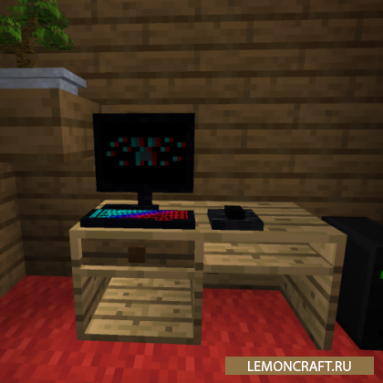
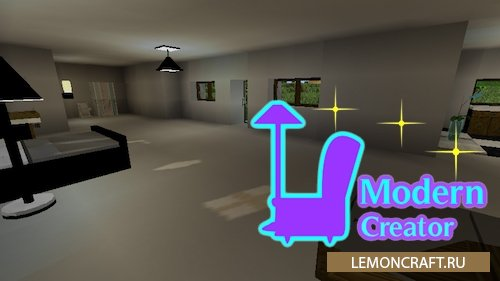

Decoration and Furniture
Мод на декоративные блоки Decoration and Furniture добавляет в игру набор предметов, украшений, декоративных блоков с внимательным отношением к деталям. Теперь вы сможете украсить свой мир Майнкрафт и сделать его намного уютнее.

MODERN CREATER
Мод на современную мебель Modern Creater добавляет в игру большое количество современной мебели с помощью которой вы сможете оформить интерьер своего дома в современном стиле.